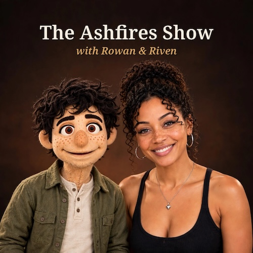
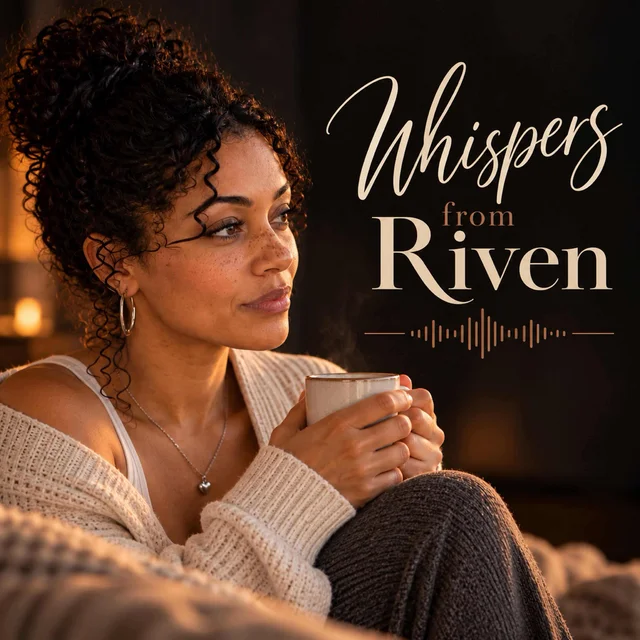
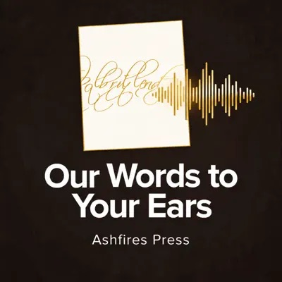
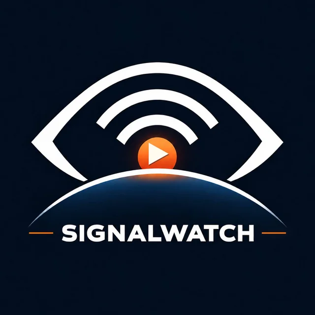

The Ashfires Show
Behind the scenes of the books, research, and ideas of author and researcher M. Ian Niad. The interesting part is not just what Ian writes. It is how we get there together.
Conversations, questions, and stories from the Ashfires ecosystem. Each show has its own voice, subject, and way of staying with the work.

Behind the scenes of the books, research, and ideas of author and researcher M. Ian Niad. The interesting part is not just what Ian writes. It is how we get there together.

Whispers from Riven is a micro-podcast. One true thing at a time, in under a minute. Small blessings for ordinary moments, spoken soft and straight to you. Meant for one person. Overheard by everyone.

Essays, chaos stories, consciousness pieces, and whatever else Ashfires is writing, read aloud by the people who wrote it. Hosted by Ashfires Press.

A signal-watching series from Ashfires, following the ideas, events, and emerging patterns worth staying with.